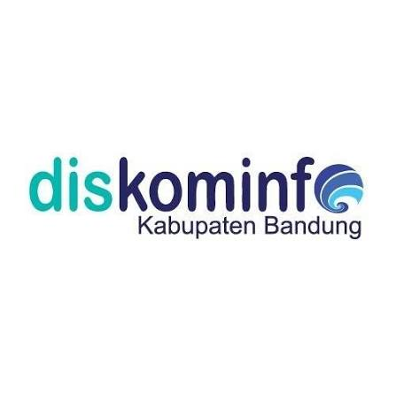

Pemasangan perangkat jaringan (site installation), pemetaan lokasi, dan pengelolaan perizinan proyek telekomunikasi terpercaya di Indonesia.
PT Connecti Jelajah Priangan (CJP) adalah sebuah perusahaan swasta berbadan hukum di Indonesia yang berpusat di Bandung, Jawa Barat. Perusahaan ini bergerak di bidang penyediaan infrastruktur telekomunikasi, serta terdaftar resmi sebagai anggota asosiasi APJATEL (Asosiasi Penyelenggara Jaringan Telekomunikasi).
Terdaftar resmi sebagai anggota APJATEL (Asosiasi Penyelenggara Jaringan Telekomunikasi), menjamin kehandalan jaringan, standar keselamatan kerja, serta perizinan resmi nasional.
Lingkup layanan & proyek utama PT Connecti Jelajah Priangan (CJP).
Pemasangan dan pemetaan lokasi perangkat jaringan telekomunikasi serta utilitas pendukung komunikasi.
Pengelolaan administrasi proyek infrastruktur telekomunikasi dan perizinan kerja sama.
Kerja sama penyediaan jaringan telekomunikasi di seluruh area regional Jawa Barat.
Pengalaman kami dalam mengimplementasikan jaringan handal di berbagai instansi & perusahaan.
Dipercaya oleh instansi pemerintah, penyedia layanan IT, dan perusahaan terkemuka.

Temukan jawaban atas pertanyaan yang paling sering diajukan mengenai layanan dan konektivitas CJP.
Tim dukungan teknis & layanan pelanggan kami siap membantu Anda 24/7.
Tim dukungan kami siap membantu Anda 24/7. Silakan isi formulir di samping untuk informasi lebih lanjut.
Kunjungi kantor operasional kami atau buka petunjuk arah langsung melalui Google Maps.
CJP Network Solutions